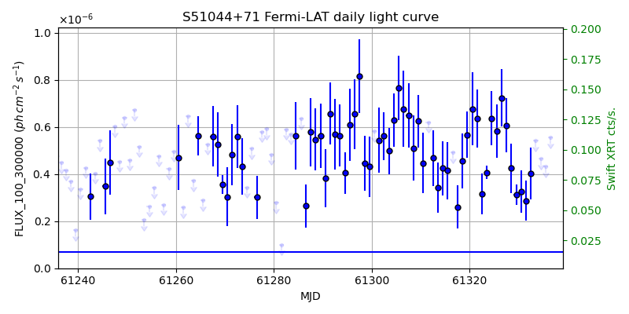
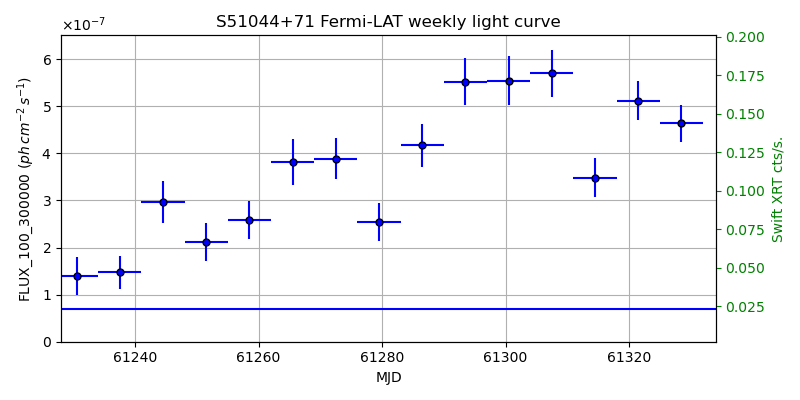
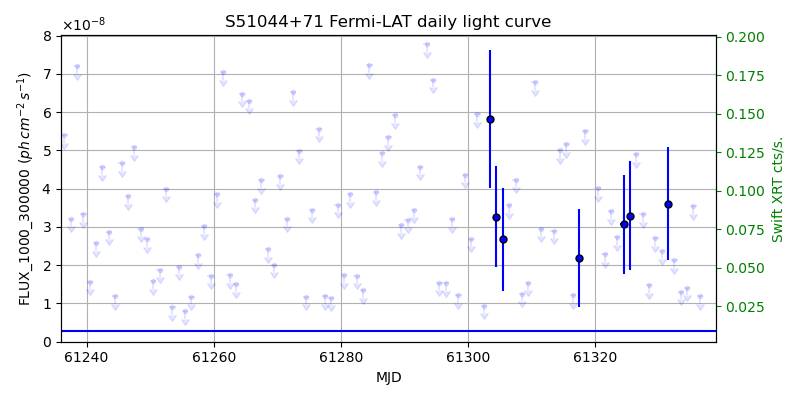
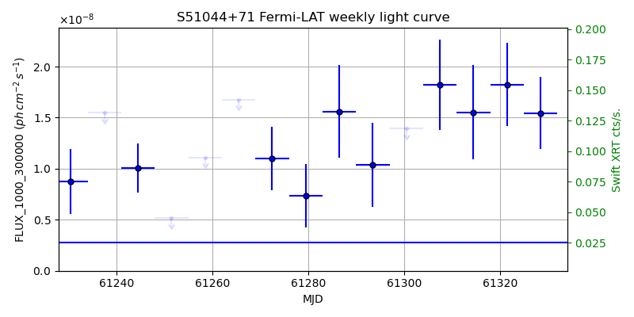

LAT Lightcurve site: https://fermi.gsfc.nasa.gov/ssc/data/access/lat/msl_lc/source/S5_1044p71
Swift site: https://www.swift.psu.edu/monitoring/source.php?source=S51044+71
NED: Query
Time of last update of this page: UT: 2026-10-24 15:22 (MJD: 61337.641)
| Property | Value |
|---|---|
| R.A. | 10:48:27.60 |
| Dec. | 71:43:37.2 |
| z | 1.150 |
| 3FGL SpectrumType | PowerLaw |
| 3FGL PL Index | 2.39 |
| 3FGL Flux_100_300000 | 6.90e-08 1 / (s cm2) |
| 3FGL Flux_1000_300000 | 2.80e-09 1 / (s cm2) |
| 3FGL Flux >200 GeV | 1.75e-12 1 / (s cm2) |
| 3FGL Extrap. Crab >200 GeV | 0.01 |
| 3FGL Flux After EBL Absorption >200GeV | 1.38e-14 1 / (s cm2) |
| 3FGL EBL Crab Fraction >200GeV | 0.00 |

| MJD | dMJD | Flux | dFlux | Frac3FGL | FracCrab>200GeV | EBLFracCrab>200GeV |
|---|---|---|---|---|---|---|
| 61332.50 | 0.50 | 4.03e-07 | 1.09e-07 | 5.85 | 0.04 | 0.00 |
| 61333.50 | 0.50 | 5.42e-07 | 0.00e+00 | 0.00 | 0.00 | 0.00 |
| 61334.50 | 0.50 | 4.66e-07 | 0.00e+00 | 0.00 | 0.00 | 0.00 |
| 61335.50 | 0.50 | 4.32e-07 | 0.00e+00 | 0.00 | 0.00 | 0.00 |
| 61336.50 | 0.50 | 5.56e-07 | 0.00e+00 | 0.00 | 0.00 | 0.00 |

| MJD | dMJD | Flux | dFlux | Frac3FGL | FracCrab>200GeV | EBLFracCrab>200GeV |
|---|---|---|---|---|---|---|
| 61300.50 | 3.50 | 5.54e-07 | 5.16e-08 | 8.04 | 0.06 | 0.00 |
| 61307.50 | 3.50 | 5.70e-07 | 4.97e-08 | 8.27 | 0.06 | 0.00 |
| 61314.50 | 3.50 | 3.48e-07 | 4.16e-08 | 5.05 | 0.04 | 0.00 |
| 61321.50 | 3.50 | 5.12e-07 | 4.21e-08 | 7.43 | 0.06 | 0.00 |
| 61328.50 | 3.50 | 4.64e-07 | 3.89e-08 | 6.73 | 0.05 | 0.00 |

| MJD | dMJD | Flux | dFlux | Frac3FGL | FracCrab>200GeV | EBLFracCrab>200GeV |
|---|---|---|---|---|---|---|
| 61332.50 | 0.50 | 2.13e-08 | 0.00e+00 | 0.00 | 0.00 | 0.00 |
| 61333.50 | 0.50 | 1.30e-08 | 0.00e+00 | 0.00 | 0.00 | 0.00 |
| 61334.50 | 0.50 | 1.41e-08 | 0.00e+00 | 0.00 | 0.00 | 0.00 |
| 61335.50 | 0.50 | 3.54e-08 | 0.00e+00 | 0.00 | 0.00 | 0.00 |
| 61336.50 | 0.50 | 1.20e-08 | 0.00e+00 | 0.00 | 0.00 | 0.00 |

| MJD | dMJD | Flux | dFlux | Frac3FGL | FracCrab>200GeV | EBLFracCrab>200GeV |
|---|---|---|---|---|---|---|
| 61300.50 | 3.50 | 1.40e-08 | 0.00e+00 | 0.00 | 0.00 | 0.00 |
| 61307.50 | 3.50 | 1.82e-08 | 4.43e-09 | 6.53 | 0.05 | 0.00 |
| 61314.50 | 3.50 | 1.55e-08 | 4.61e-09 | 5.56 | 0.04 | 0.00 |
| 61321.50 | 3.50 | 1.82e-08 | 4.07e-09 | 6.53 | 0.05 | 0.00 |
| 61328.50 | 3.50 | 1.55e-08 | 3.56e-09 | 5.54 | 0.04 | 0.00 |
--------------------------------------------------------- Using user-supplied coords: 10:48:27.60 71:43:37.2 2000 --------------------------------------------------------- FLWO UT night of: 2026-10-25 Local Sid. @ Midnight: 01:50 Sunset (-15.0) (local, UT): 18:49 01:49 Sunrise (-15.0) (local, UT): 05:27 12:27 Moonrise (local, UT): Moonset (local, UT): Moon phase: 0.99 --------------------------------------------------------- AzTime LSID UT Obj_el Obj_az Mn_el Mn_az Sep. --------------------------------------------------------- 18:49 20:39 01:49 15.8 349.8 26.2 94.5 95.8 19:19 21:09 02:19 14.8 352.0 32.4 98.6 95.6 19:49 21:39 02:49 14.1 354.3 38.6 103.2 95.4 20:19 22:09 03:19 13.6 356.7 44.7 108.4 95.2 20:49 22:39 03:49 13.3 359.1 50.6 114.6 95.1 21:19 23:09 04:19 13.4 1.6 56.2 122.3 94.9 21:49 23:39 04:49 13.7 4.0 61.2 132.2 94.7 22:19 00:09 05:19 14.3 6.4 65.5 145.3 94.6 22:49 00:39 05:49 15.1 8.7 68.4 162.2 94.4 23:19 01:10 06:19 16.2 10.9 69.4 182.2 94.3 23:49 01:40 06:49 17.5 12.9 68.2 202.0 94.1 00:19 02:10 07:19 19.0 14.8 65.1 218.6 94.0 00:49 02:40 07:49 20.8 16.5 60.8 231.3 93.8 01:19 03:10 08:19 22.7 18.1 55.7 240.9 93.7 01:49 03:40 08:49 24.7 19.4 50.1 248.5 93.5 02:19 04:10 09:19 26.9 20.4 44.3 254.6 93.4 02:49 04:40 09:49 29.2 21.2 38.2 259.8 93.2 03:19 05:10 10:19 31.5 21.7 32.1 264.4 93.1 03:49 05:40 10:49 33.9 21.8 26.0 268.5 92.9 04:19 06:10 11:19 36.2 21.6 19.9 272.4 92.8 04:49 06:40 11:49 38.6 21.0 13.8 276.2 92.7 05:19 07:11 12:19 40.8 19.9 7.8 279.9 92.5 05:27 07:18 12:27 41.3 19.6 6.2 280.9 92.5 --------------------------------------------------------- Source never above horizon of 55.0 deg. Dark hours >55 deg.: 0.00